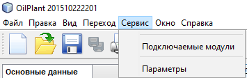

Описание меню "Сервис"
Меню "Сервис" предназначено для расширения функционала приложения.
Операции с командами этого меню разрешается только системному администратору.
Вид меню "Сервис":

Команда "Подключаемые модули" предназначена для установки, удаления или отключения обновлений и дополнений приложения.
Команда "Параметры" предназначена для настройки различных параметров приложения, таких как внешний вид, настройки доступа к интернету и т.д.